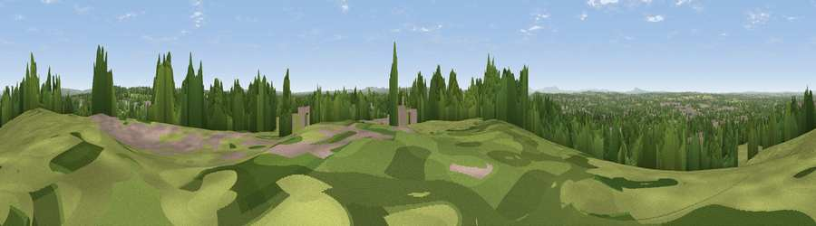

Bushbury Hill
#16361 in England · top 22% of its area beats it · near Park VillageThe view, rendered

A 360° render of this exact spot computed from the terrain model, tree cover and land cover — summer colours, afternoon light, calibrated against photographs of famous viewpoints. Real trees, hedges and buildings will differ in detail.
The panorama
Grey silhouette: terrain skyline in each direction (720 bearings, Earth curvature and refraction included). Dashed green: skyline with trees (+15 m) and buildings (+8 m) as obstacles. Blue strip: how far the ground is visible on each bearing.
Where the view opens
Wedge length = distance to the farthest visible ground on that bearing (vegetation-aware). Rings at 10, 25 and 50 km.
What fills the view
33% built-up · 31% woodland · 28% grassland · 8% cropland
Angular shares of the visible panorama (visual magnitude), not map area. Landscape diversity 0.56 (0–1 Shannon).
Key numbers
More beautiful places nearby
The staircase of upgrades: each row has a higher view potential than everything closer. Driving times are estimates from straight-line distance, calibrated against real road routing — check an actual route before setting out.
| Place | Direction | Drive | Score |
|---|---|---|---|
| Viewpoint near Featherstone | NE · 2 km | ~5 min | 58.8 |
| Viewpoint near Ettingshall Park | S · 8 km | ~15 min | 59.3 |
| Viewpoint near Gospel End | S · 10 km | ~19 min | 62.3 |
| Viewpoint near Oakham | SSE · 14 km | ~25 min | 68.3 |
| Viewpoint near Streetly | ESE · 14 km | ~26 min | 69.5 |
| Viewpoint near Enville | SW · 21 km | ~35 min | 73.1 |
| Viewpoint near Clent | S · 22 km | ~37 min | 73.8 |
| Viewpoint near Clent | S · 22 km | ~37 min | 74.3 |
52.61999, -2.10666 · source: osm peak · position refined by local search. Computed location — check access rights before visiting.